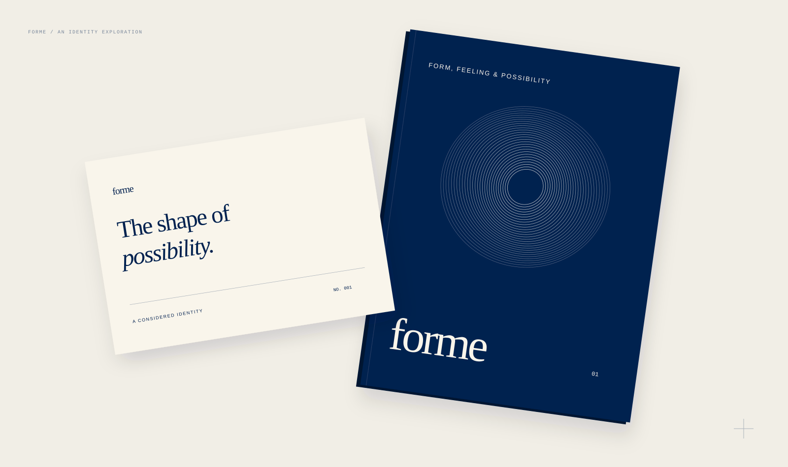
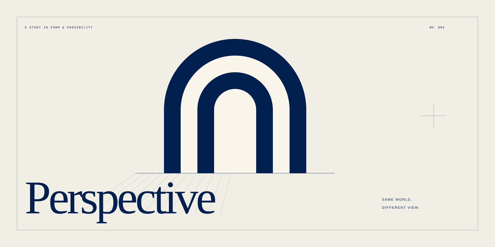

View study STUDY NO. 0101
Forme
A quiet identity with a confident presence.
Independent design & art direction
PORTFOLIO — VOL. 01Thoughtful identities and digital experiences.
Made with clarity, character, and care.
01 / A selection of explorations
Different expressions.
One considered point of view.

View study STUDY NO. 01A quiet identity with a confident presence.
 View study STUDY NO. 02
View study STUDY NO. 02
Finding a rhythm between space and story.
 View study STUDY NO. 03
View study STUDY NO. 03
A digital space for a shared perspective.

View study STUDY NO. 04A familiar form. A different way of seeing.
FOUR REPLACEABLE CONCEPT STUDIES. A CANVAS FOR YOUR OWN WORK.
02 / The person behind the practice
Good design starts with paying attention.
[A short introduction to you and your practice. Share what you care about, how you think, and the kind of work you want to put into the world.]
[A little about your background, your approach, and what makes a collaboration with you feel different.]
Let’s start a conversation03 / Areas of focus
A considered approach, from the big picture
to the small things that make it yours.
Distinctive visual systems that give an idea its own clear voice.
Intuitive websites where thoughtful form meets everyday function.
A coherent point of view, carried through every visual decision.
Type, image, and space brought together to tell a considered story.